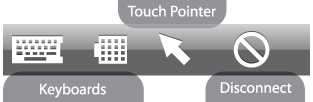
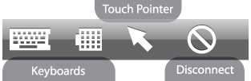

Toolbar
With the toolbar you'll be able to display and hide the main tools in your session. This allows together with the touch pointer and the gestures an intuitiv workflow for remote computing on touch sensitive screens.



With the toolbar you'll be able to display and hide the main tools in your session. This allows together with the touch pointer and the gestures an intuitiv workflow for remote computing on touch sensitive screens.
